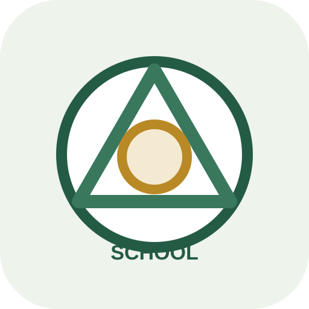

說一句話重開
設定完成後，之後只要對 Codex 說：
開啟AI工作瀏覽器AI 會安排可用的工作瀏覽器，盡量沿用登入狀態，預設先進 ChatGPT。

頂溪國小第 5 單元
安裝必要工具，開啟或沿用一個 AI 可以協助操作的工作瀏覽器；登入過的網站之後可以在同一個工作瀏覽器裡重用。
準備你要使用的網站帳號；若電腦由學校管理，也先確認能否安裝工具。
提示詞
你是協助學校行政承辦人的 AI 助手。請協助我安裝或更新 AI 工作瀏覽器，保留既有登入狀態，並設定下次開啟的快捷語句。
repo：https://github.com/chianwu-hash/browser-automation-workflow
請先讀取最新 README、ai-work-browser 的 SKILL.md 與所需參考文件，再依本機設定操作；不要把其他電腦的路徑或埠號當成固定設定。
【一、安裝與檢查】
- 檢查 Git、npm、相容的 Node.js LTS（至少 22.13.0）；Windows 還需要 PowerShell 7（pwsh）。需要 UAC、管理員密碼或學校授權時，停下來讓我處理。
- 優先沿用既有 repo；更新前確認 remote 與本機修改，不覆蓋未提交內容。首次安裝選擇目前使用者可寫、工作資料夾以外的固定工具目錄。
- 依 repo 說明執行 npm install、npm run skills:install 與 npm run check，並確認 browser:manage、browser:run 可用；相關依賴由 npm install 帶入，不重複 clone。
- 更新已複製安裝的技能前先確認差異，再依說明使用 skills:install:force；symlink 或 junction 應更新來源，不強制覆蓋。需要重新啟動 Codex 才能載入新版時，告訴我接續方式。
【二、開啟與驗證】
- 依已安裝的 ai-work-browser 技能取得工作瀏覽器。已有本機共用啟動器時，使用 ai-browser-launch -Acquire -Json 並遵守本機占用規則，不以手動啟動命令繞過分配。
- 沒有共用啟動器時，依 repo 文件使用 browser:manage；既有 CBS 設定先用 init --session-file 採用原設定，不複製登入資料，也不另建設定冒充原登入狀態。首次使用預設一個工作瀏覽器，不接管日常 Chrome。
- 後續操作依技能保持同一占用、實際端點與指定分頁；公開管理器的下游工作優先使用 browser:run，不繞過本機共用啟動器。
- 開啟 ChatGPT；需要登入時先停止自己的自動化並釋放占用，讓我親自登入。我說「我登入好了」後再依技能取得並驗證，不操作密碼或驗證碼。
- 確認可以沿用網站登入、下載到目前使用者的下載資料夾，以及必要擴充功能的安裝權限。用非敏感測試檔檢查檔案實際存在與 Chrome 原生下載紀錄可點擊開啟，不以連線成功取代下載驗證，也不接管瀏覽器下載行為。
- 安裝完成後提供技能的選用分身提醒與啟用語句，不自動啟用。啟用時再引導我登入各網站；Chrome 帳號登入與同步是選用功能，不是分身的前提，也不會同步網站登入狀態。
【三、設定快捷語句】
檢查本機等級的 Codex AGENTS.md，更新既有工作瀏覽器規則或在不存在時建立，保留其他規則，不重複附加，也不寫入公開專案。位置不明時先問我。快捷規則只需記錄：
「使用者說『開啟AI工作瀏覽器』時，依已安裝的 ai-work-browser 技能與本機設定取得、使用及釋放工作瀏覽器；未指定網站時預設 ChatGPT。只有使用者明確要求『我想要使用 AI 工作瀏覽器分身』時才依技能啟用並引導登入。」
不要在 AGENTS.md 複製整套埠號、占用或啟動細節，以免與技能更新不同步。
【安全與回報】
登入資料與瀏覽器設定留在使用者資料目錄，不放進 repo。不要讀取、輸出或提交 cookie、session、密碼、驗證碼或敏感截圖；不用真實學生、家長或教職員資料測試。上傳、寄信、刪除、發布、匯入或修改正式資料前，先確認我的授權及畫面上的實際登入帳號。陌生登入頁先讓我確認。
如果你有本機操作或安裝權限，請代我檢查並完成必要安裝；如果你沒有權限，請用我看得懂的步驟帶我完成，不要只丟技術文件連結給我。
完成後簡短回報 repo／技能／本機規則的位置、環境與檢查結果、登入與下載驗證結果、仍待我處理的項目，以及下次開啟與選用分身的語句。尚未驗證的項目請明確標示，不要宣稱全部完成。設定完成後，之後只要對 Codex 說：
開啟AI工作瀏覽器AI 會安排可用的工作瀏覽器，盡量沿用登入狀態，預設先進 ChatGPT。
如果之後要用其他網頁工具，可以在同一個工作瀏覽器登入。登入狀態會保存，但密碼和驗證碼仍然要自己處理。
可以對 Codex 說「我想要使用 AI 工作瀏覽器分身」。AI 會引導設定，之後讓不同對話各用自己的工作瀏覽器；各分身需要的網站仍要分別登入。
不必登入 Chrome 帳號也能使用分身。Chrome 同步可選用來共用密碼、書籤等資訊，不會代你登入其他網站。